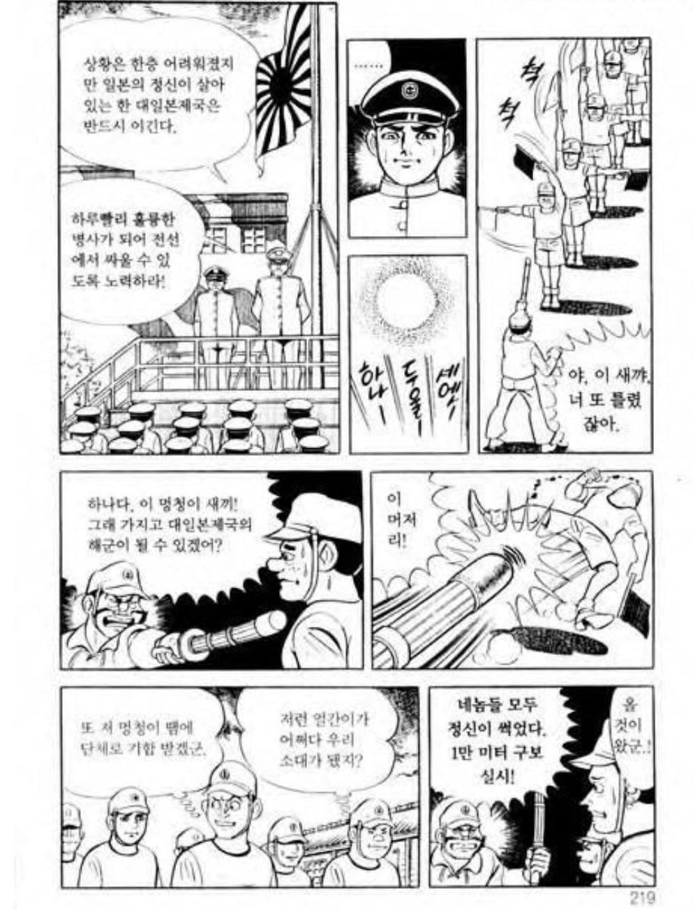
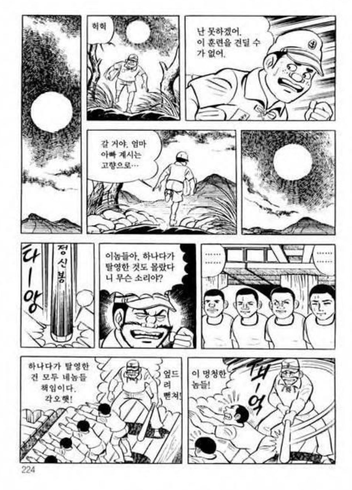
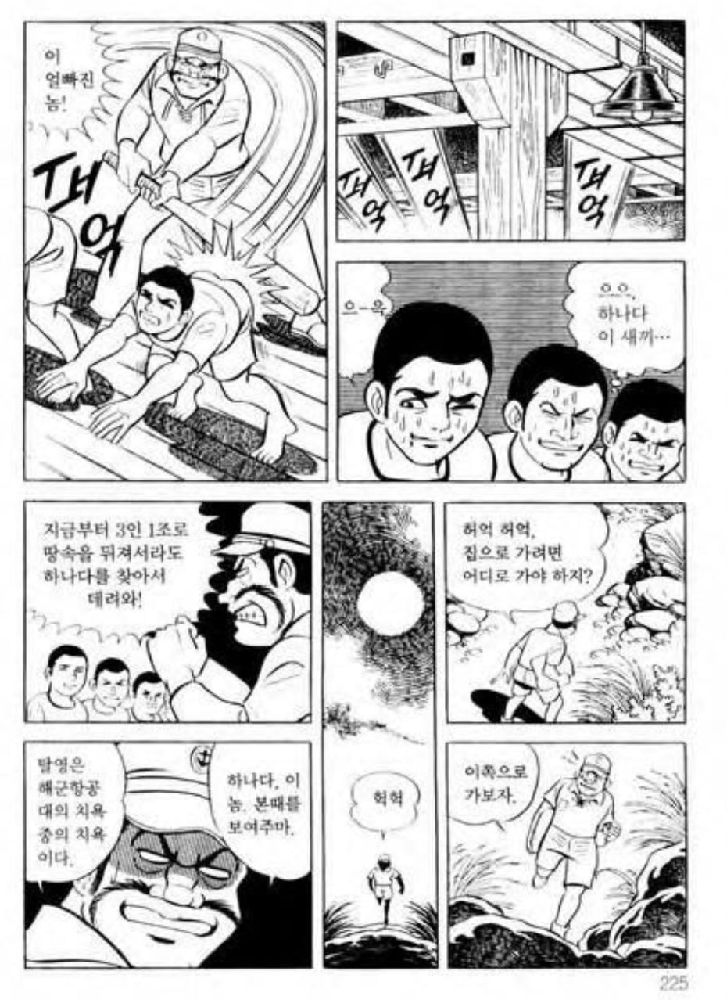
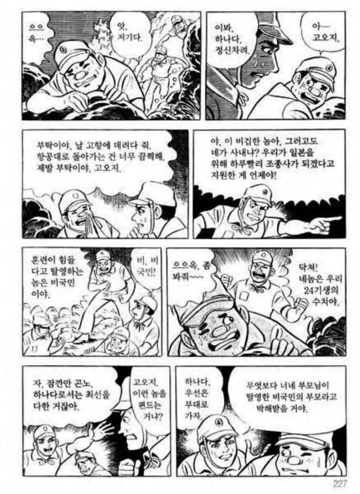
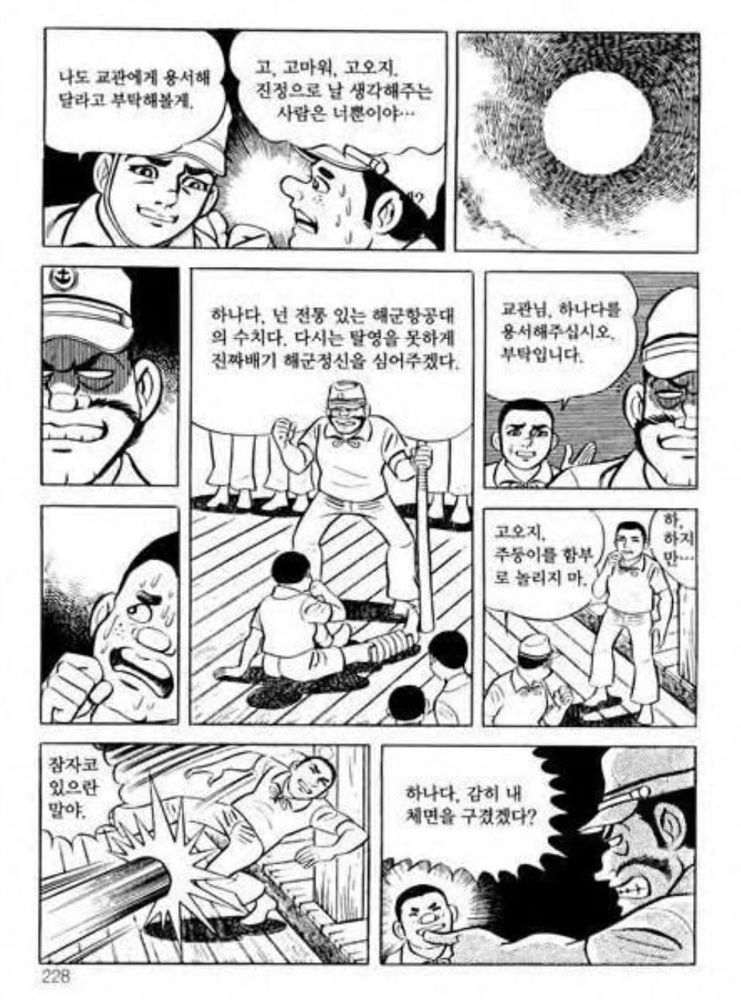
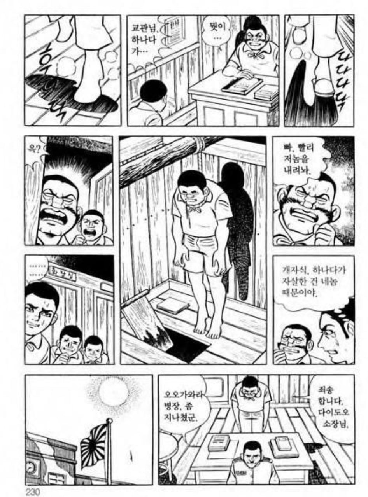

결국 자살사고 난거 보면....
병영부조리, 구타는 없어져야할 사회악임 ㄹㅇ....






결국 자살사고 난거 보면....
병영부조리, 구타는 없어져야할 사회악임 ㄹㅇ....
+ 저기서 부모님은 명예롭게 아들이 죽었다고 말을 들었는데 친구가 진실을 알려주니 개소리 말라고 후려갈기고 갑니다...
내 아들은 탈영따위 불명예스러운 행동을 했을 리 없고, 명예롭게 전사했어야만 하는 것
기억이 가물가물한데 1권때 주인공이랑 얘들 나오고 하다가 핵 떨어지고 하는걸로 아는데 저게 먼저인가보네
맨발의 겐 오랫만에 보네.
저 병장은 어찌됨? 걍 저걸로 끝?
ㅇㅇ 그냥 서로 으쌰으쌰하고 끝남
역시 대일본제국이구만
단체로 할복하는게 미덕인 나라니까
병영부조리를 놓고 보더라도 어느 시대나 전시 탈영병 처벌은 절대 약하지않았음
왜란 당시도 탈영병때문에 골머리 앓았던거 생각하면 글의 주장이 너무 약하게 들림
https://blog.naver.com/kkumi17cs1013/221189538423
이게맞다. 정식 재판을 거쳐 총살했어야지. 저건 그냥 기분나빠서 패는거 밖에 안됨
Factos) 우리도 15년전까지 저랬다
심지어 몇몇부대는 아직도 저지랄하는 곳이있다
일본군은 병신군대가 맞다
저 이후 병장은 사람 죽지 않을 정도로만 하라고 한마디 듣고서 끝
저 훈련병은 명예롭게 훈련중에 사망처리
주인공은 진실을 알려야한다고
훈련병 부모한테 가혹행위로 자살했다고 하니까 그럴리가 없다면서 지랄말라고 주인공 쫓아내는걸로 마무리.
맨발의 겐을 보고서도 왜 저 장면이 기억이 안나지
아무래도 극초반부 내용이라
히로시마 핵폭격 장면이 제일 첫 시작이라고 생각하고 있었음 ㅋㅋ
+ 만화는 맨발의 겐 1권입니다.